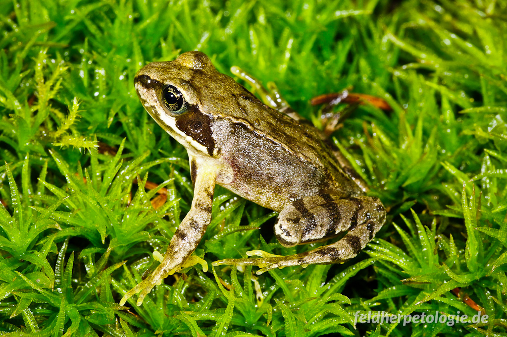

GrasfroschDer Grasfrosch (Rana temporaria) gehört zur Gattung der Echten Frösche in der Familie der Echten Frösche. Weitere, allerdings kaum mehr gebräuchliche Trivialnamen sind unter anderem „Taufrosch“ und „Märzfrosch“. Zusammen mit ähnlich aussehenden und ebenfalls eher terrestrisch lebenden Arten wie dem Springfrosch und dem Moorfrosch wird er außerdem unter dem Sammelbegriff „Braunfrösche“ geführt. Der Grasfrosch wurde in Deutschland und Österreich zum „Lurch des Jahres 2018“ gekürt. |
 | |
Kleiner WasserfroschDer Kleine Wasserfrosch (Pelophylax lessonae oder Rana lessonae), auch Kleiner Teichfrosch oder Tümpelfrosch genannt, gehört innerhalb der Ordnung der Froschlurche zur Familie der Echten Frösche (Ranidae). Außerdem wird er nach Aussehen, Lebensweise und Verwandtschaftsbeziehungen zu den Wasserfröschen gerechnet, die neuerdings von vielen Autoren in eine eigene Gattung Pelophylax gestellt werden. Innerhalb dieses schwer zu überschauenden Komplexes bildet er zusammen mit dem Seefrosch die Elternarten der Hybride Teichfrosch. |
||
LaubfroschDie Familie der Laubfrösche (Hylidae) besteht aus überwiegend kletternden Froschlurchen (Anura), deren Arten weltweit verbreitet sind. Die größte Vielfalt erreichen sie in der Neuen Welt. Es sind derzeit etwa 720 Arten bekannt, womit es sich um eine der artenreichsten Familien in der Klasse der Amphibien handelt. |
||
MoorfroschDer Moorfrosch (Rana arvalis) gehört innerhalb der Ordnung der Froschlurche zur Familie der Echten Frösche und ebenso zur Gattung der Echten Frösche. Außerdem fasst man ihn nach Aussehen und Lebensweise mit anderen Arten (vergleiche: Grasfrosch, Springfrosch) zu den sogenannten Braunfröschen zusammen. |
||
SeefroschDer Seefrosch (Pelophylax ridibundus, Syn.: Rana ridibunda) gehört innerhalb der Ordnung der Froschlurche zur Familie der Echten Frösche (Ranidae). Außerdem wird er nach Aussehen, Lebensweise und Verwandtschaftsbeziehungen zu den Wasserfröschen gerechnet, die inzwischen in eine eigene Gattung Pelophylax gestellt werden. Der Seefrosch gilt als „gute Art“, seine genaue Verbreitung ist jedoch noch nicht abschließend geklärt. Terra typica der Art ist Atyrau (früher Gurjew) in Kasachstan, am Nordende des Kaspischen Meeres.[1] Über die Biologie der Seefrösche speziell dieser Region ist noch sehr wenig bekannt, eine Analyse der Rufe liegt vor.[2] |
||
SpringfroschDer Springfrosch (Rana dalmatina) gehört innerhalb der Ordnung der Froschlurche zur Familie der Echten Frösche und ebenso zur Gattung der Echten Frösche. |